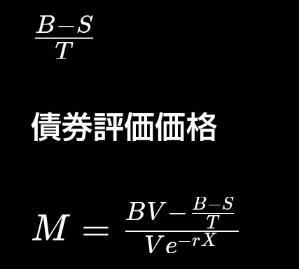

クジラ・プランクトン生態系モデルによる金融市場構造の数理分析 要旨 本研究は、生態系におけるクジラとプランクトンの相互作用を基礎として、経済学および金融市場における資産価格形成の構造を数理的に定式化することを目的とする。 クジラを資本主体、プランクトンを市場流動性主体とみなし、両者の関係を限界需要曲線および限界収入曲線と対応させることで、平均費用曲線およびオプション価格構造を統合した金融証券モデルを導出する。 1. 生態系モデル 海洋生態系では、大型捕食者であるクジラはプランクトン資源に依存して生存している。 しかし資源が枯渇した場合、クジラの死骸が新たな生態系基盤となり、そこに新たな生物群集が形成される。 この構造を次の二状態として定義する。 K1状態 プランクトン資源が豊富であり、クジラの生存率が高い状態。 K2状態 プランクトン資源が減少し、クジラの死骸を基盤とする生態系によって生存が維持される状態。 このとき生態系の状態変数は K = {K1 , K2} として表される。 2. 経済学的対応 この二状態を経済学の需要理論に対応させると次の関係が得られる。 K1 → 限界需要曲線 MD K2 → 限界収入曲線 MI この関係は以下の関数として表現できる。 K1 / MD + K2 / MI = f(MD , MI) ここで MD : 限界需要 MI : 限界収入 この式は市場構造を表すモジュラー形式の関係式である。 3. 平均費用曲線と円周率構造 クジラの行動範囲は空間的に周期性を持つ。 この周期性は幾何学的には円軌道として表現される。 したがってクジラの活動領域は π によって記述される。 平均費用曲線 AC は、この円周の一部として表現される。 AC ⊂ π 特に市場の安定状態では AC < π/2 の範囲で曲線が形成される。 このとき AC MD MI の三曲線は幾何学的に三角関係を形成する。 4. 金融証券市場への対応 生態系モデルを金融市場へ写像すると以下の関係が得られる。 生態系 経済 金融 プランクトン 需要 国債 クジラ 供給 株式 つまり MD → Bond MI → Stock として対応する。 5. 市場取引構造 金融市場は次の二種類の取引構造を持つ。 5.1 証券市場外取引 市場外取引では、資産交換コストが発生する。 O = (B − S) / T B : 国債価格 S : 銘柄価格 T : 市場パラメータ O : オプション 5.2 証券市場内取引 市場内では資産は利子率によって割引される。 S2 = (B V − O) / (V e^(−rX)) V : 市場流動性 r : 金利 X : 時間 この式は株価形成モデルとして解釈できる。 6. 費用構造 オプションは次の性質を持つ。 オプション = 市場交換コスト オプション = 市場移転コスト したがってオプションは 平均費用曲線 AC に対応する。 7. 市場価格構造 銘柄原価を市場外取引と市場内取引に分解すると K1 / S + K2 / S = f(S , S) という関係が得られる。 これはクジラ・プランクトン生態系モデルと金融市場の構造的同型性を示している。 8. 結論 本研究では、生態系モデルを用いて金融市場の構造を数理的に表現した。 クジラ・プランクトンモデルは 生態系 経済需要 金融市場 の三領域に共通する構造を持つことが示された。 特に 平均費用曲線 限界需要曲線 限界収入曲線 の幾何学関係と、金融市場の 国債 株式 オプション の関係が対応することが明らかとなった。